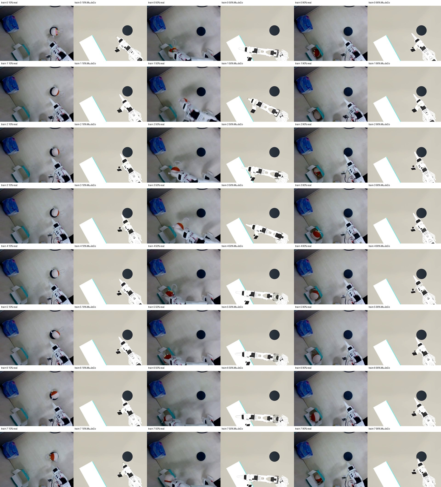

Real-to-Sim 与 MuJoCo 仿真实践
场景建模 · 示教轨迹回放 · 真实与仿真对应检查
MuJoCo 示教轨迹回放
将真实场景、机械臂状态与示教数据组织到仿真环境中，围绕场景几何、机器人状态和观察视角开展建模与检查。
基于已采集的示教数据，在 MuJoCo 中回放关节轨迹，对照场景布局与相机视角。
真实与仿真资料对照

相关经验
具备 Real-to-Sim 建模与仿真实践经验，了解 MuJoCo、Isaac Sim 等环境，使用 LIBERO、ManiSkill 等 benchmark，结合仿真评估与真机实验分析策略表现。
熟悉了解 ROS / ROS2，并积累 ROS / Gazebo 建图、定位、导航与 A* 路径规划相关实践。